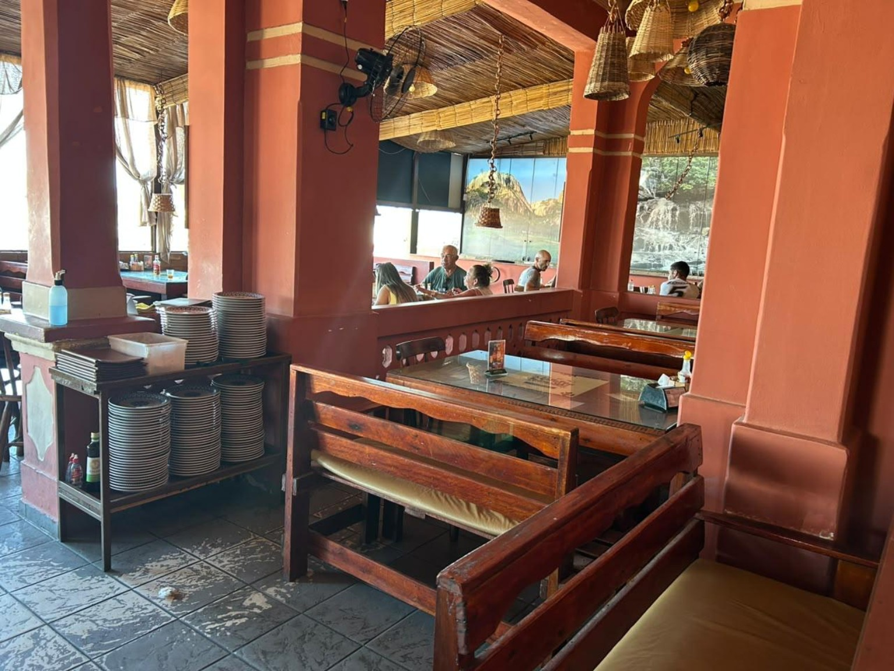

Matuto Teimoso
Culinária regional · Cabo Branco
Avenida Cabo Branco, 1108 – Cabo Branco, João Pessoa – PB, 58039-010.
Recursos de acessibilidade informados
Rampa de acesso
Piso tátil
Banheiro acessível
Iluminação adequada
As informações de acessibilidade e a avaliação foram fornecidas para este cadastro. Recomenda-se confirmar diretamente com o estabelecimento as condições atuais e os detalhes de cada recurso antes da visita.
↗ Ver localização no mapa